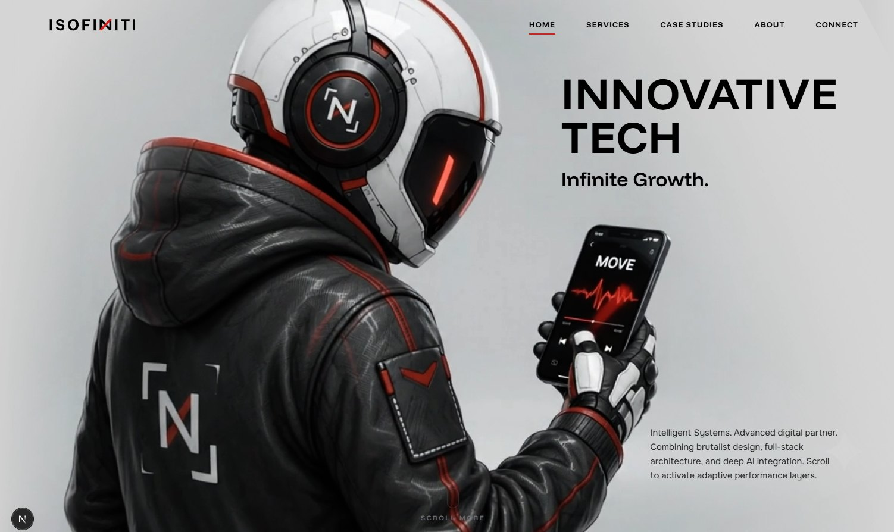
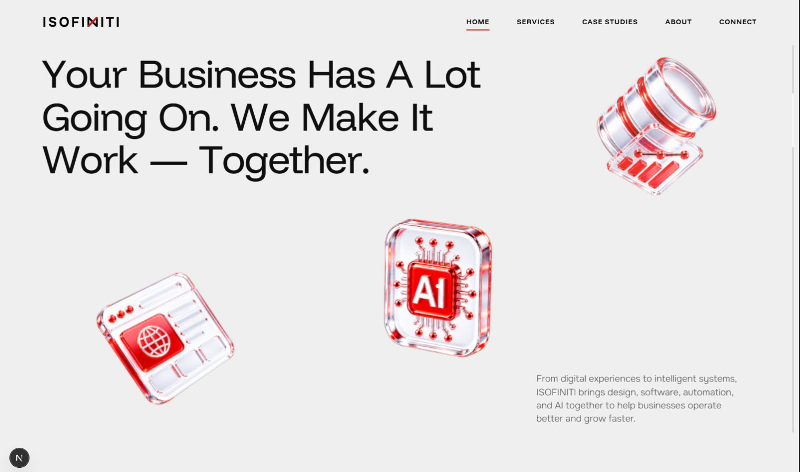
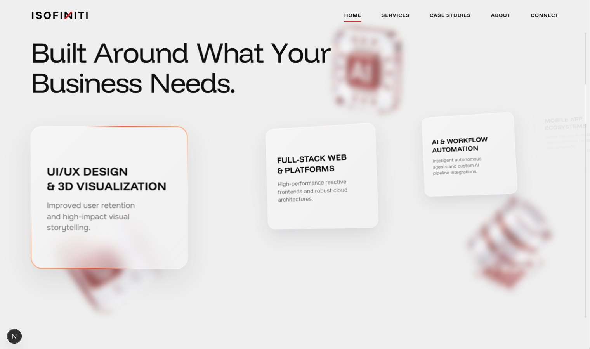
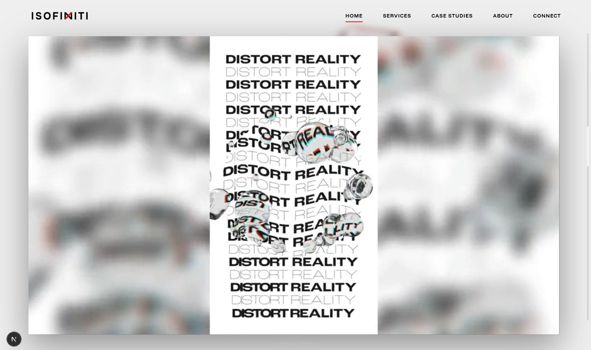
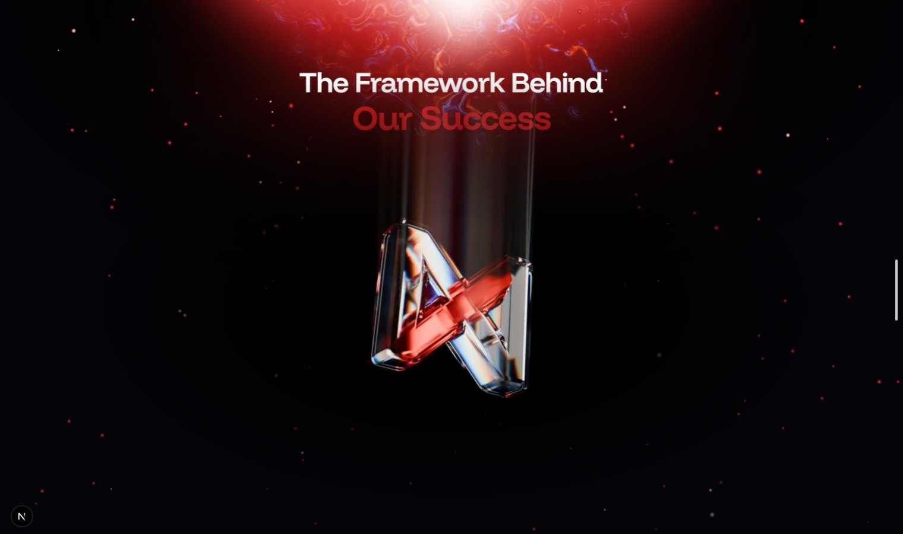
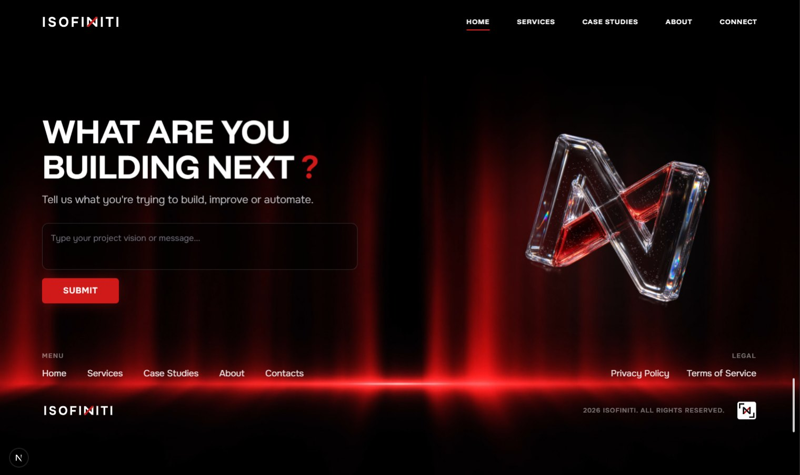
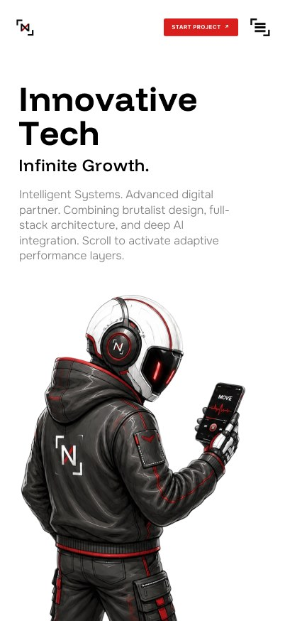
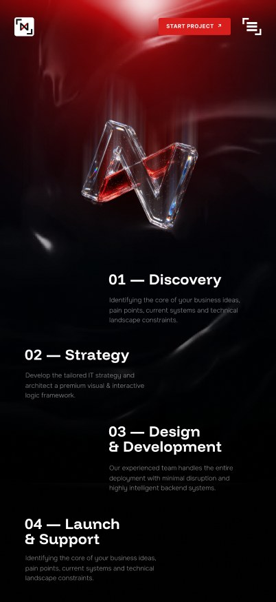
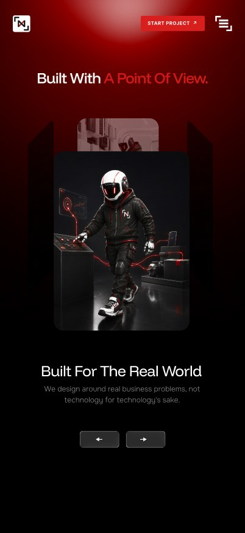
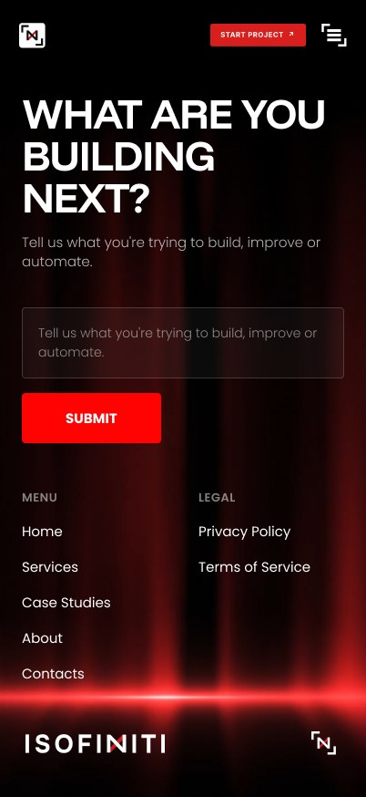

Strong visual identity
The website is built around the new ISOFINITI brand direction, using a focused visual system instead of a generic technology-agency aesthetic.
Designing a bold digital presence for ISOFINITI that combines technology, visual storytelling, 3D elements and a confident brand identity.
Why should I trust this team to build and deliver my digital product?
ISOFINITI is the US brand of Arijentek Solution, and it needed a website that introduced this identity on its own terms, positioning the company as a modern technology and digital delivery partner.
I worked on the overall website experience — Home, Services, About, Work and Contact — and developed the visual direction, integrated the ISOFINITI mascot, and explored 3D and animation concepts to make the site distinctive and memorable.
Rather than a collection of service pages, the site gradually introduces the company, establishes credibility, demonstrates capability and moves visitors toward its work and contact.
The website is built around the new ISOFINITI brand direction, using a focused visual system instead of a generic technology-agency aesthetic.
Iso, the ISOFINITI mascot, recurs throughout the site as part of the brand experience and visual storytelling — not a standalone graphic.
3D elements and animation concepts add depth and personality while reinforcing the technology-focused positioning.
The homepage in motion, its sections on desktop, and the same site on a phone.











This project let me work across both product and brand experience — from structuring the website to developing its visual language — and explore how 3D, mascot design and motion can work together to create a stronger digital identity.
Want the full walkthrough of this project? Let’s talk